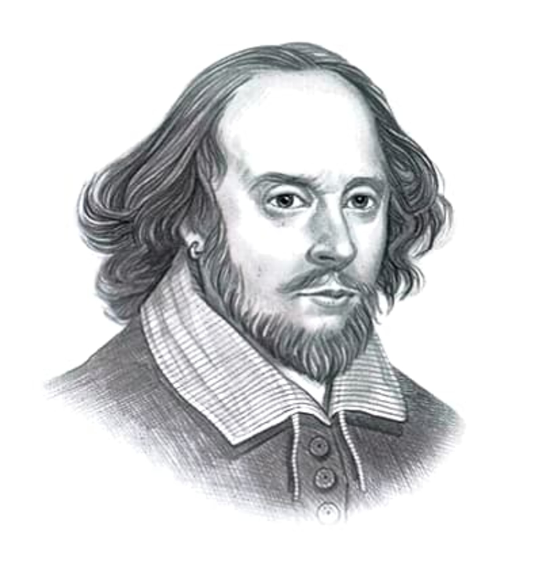

William Shakespeare
An English poet, playwright and actor, known as the greatest writer in the English language and the world's pre-eminent dramatist. He is often called England's national poet and the "Bard of Avon". His extant works, including collaborations, consist of approximately 39 plays, 154 sonnets, two long narrative poems and a few other verses, some of uncertain authorship. His plays have been translated into every major living language and are performed more often than those of any other playwright.
The Bard of Avon, as William Shakespeare is also known, was the child of a leather merchant and glover, John Shakespeare. His mother was from a family of landed gentry. In the absence of records detailing Shakespeare's early education, historians guess he attended a nearby school where he learned to read and write English as well as Latin.
In 1582, when he was just 18, Shakespeare married Anne Hathaway, a woman eight years his senior. They would have three children, a daughter in 1583 and a set of twins in 1585. They lost their only son, Hamnet, when the boy was 11 years old. Daughters Susanna and Judith would live to be 66 and 77, respectively. From 1586 until 1592, very little information is available regarding the Shakespeare household or the bard himself. During this period that historians refer to as the writer's lost years, only a scant legal document or two gives evidence of Shakespeare's existence. Over the years, various biographers have speculated that he may have been a poacher on the run from a disgruntled landowner, a horse-minder at a London theater, or more probably, a local schoolmaster.
William Shakespeare’s Plays- While it’s difficult to determine the exact chronology of William Shakespeare’s plays, over the course of two decades, from about 1590 to 1613, he wrote a total of 37 plays revolving around several main themes: histories, tragedies, comedies and tragicomedies.
for more information click here:www.google.com